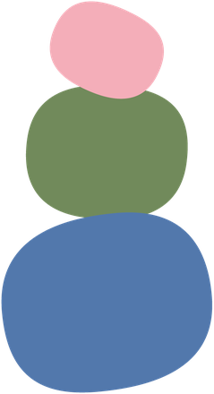

Open House
reserve your spot.
We'd love to show you around. Pick a time below and we'll have everything ready for you.

you're in — see you there.
We've sent a confirmation to your email with your time slot. We can't wait to show you around.
Taking you to our Instagram now — come say hello!
Saturday, 22 August 2026
Little People Montessori, Next to Acme Regency, SV Road, Vile Parle (West), Mumbai – 400056
This first visit works best parent-to-parent — we'll have plenty of time with your little one at the follow-up visit, so this one's just for the grown-ups.